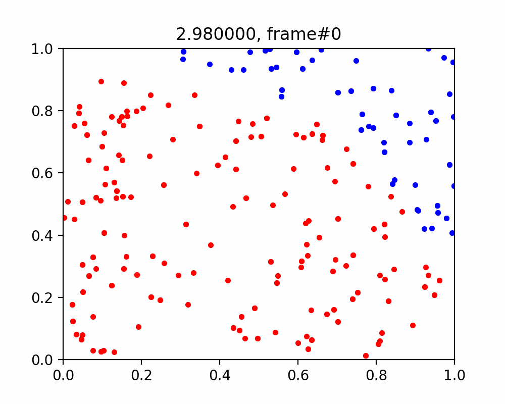

Suppose we fill a quadrant of the plane with randomly placed dots, where the dots inside the circle (i.e. $\sqrt{x^2+y^2} \leq 1$) are red, $r$, and the dots outside the circle are blue, $b$. The ratio of the red dots to the total number of dots is given as $$\frac{\pi}{4} = \frac{r}{r+b}.$$
Using this simple method, we can approximate pi as follows $\pi \approx \frac{4r}{r+b}.$  Repo